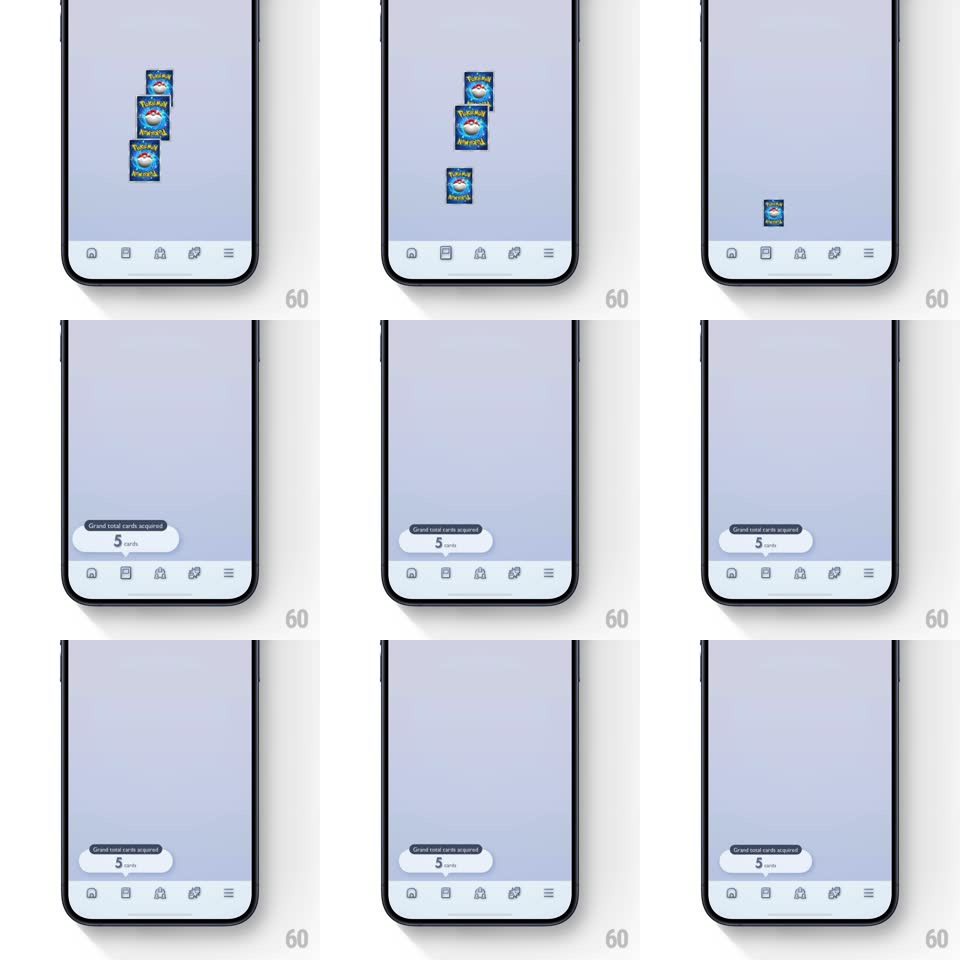

Media
Frame-by-frame

Rebuild this interaction 1:1: Pokemon TCG Pocket's cards-acquired drop - the newly won cards drop one by one down the screen into the cards tab-bar icon, and a springy tooltip pops above the tab bar showing the updated grand total.

Rebuild this interaction 1:1: Pokemon TCG Pocket's cards-acquired drop - the newly won cards drop one by one down the screen into the cards tab-bar icon, and a springy tooltip pops above the tab bar showing the updated grand total. ## Integration Integration: stack-agnostic spec - springs given as stiffness/damping, timed motions as duration + curve; map every value to your framework and animation library of choice. ## Scene A pale lavender screen, empty except the bottom tab bar (home, cards, and other icons). Cards (Pokemon backs) appear at the top and fall toward the cards tab icon; the tooltip is a white pill above the tab bar reading "Grand total cards acquired! 5 cards" with a small pointer triangle. ## Motion spec Pattern: sequential drop-to-icon + tooltip pop. - Each card spawns near the top center and drops toward the cards tab icon (translateY with accelerating ease-in over ~450ms), shrinking as it falls (scale 1 -> 0.4) so it reads as flying away into the icon. - Cards drop sequentially (~250ms apart), each landing with a tiny icon bounce (tab icon scale 1 -> 1.2 -> 1, spring, 200ms) and a soft tick sound. - After the last card lands, the tooltip pops above the tab bar (scale 0.7 -> 1.05 -> 1, spring ~450/16, 350ms) with the count text, and the tab icon does one final celebratory wiggle. - The tooltip holds ~2s, then eases out (translateY +8px, opacity -> 0, 250ms). ## Calibration - Drops accelerate - ease-in only; the "sucked into the icon" feel comes from gravity plus shrink. - The icon bounce fires per card - five cards, five ticks of feedback. ## Reduced motion Cards fade toward the icon; tooltip appears without spring. ## Don't miss - Cards tilt slightly as they fall (rotateZ +/-8deg) - they tumble, not elevator-drop. - The tooltip's pointer triangle aims exactly at the cards tab icon.